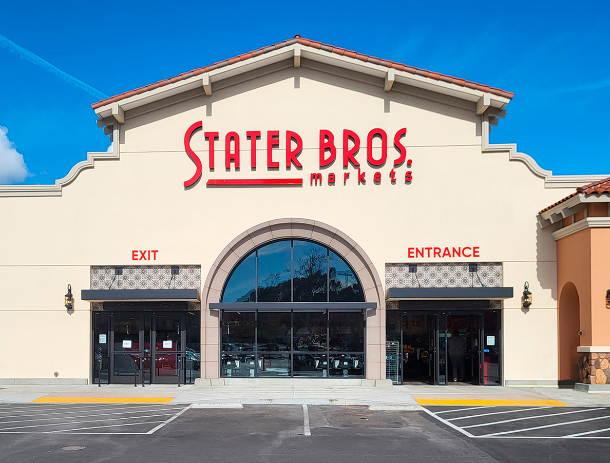

Angelica Ortiz
I’m Angelica Ortiz, a psychologist who loves helping people understand themselves and improve their emotional well-being. I have a PhD in Clinical Psychology and a master’s in Counseling Psychology, which prepared me to guide people through life’s toughest challenges. My focus is on trauma recovery and emotional health, and I create a safe space where clients can openly share and work through their feelings. My own experiences drew me to this field, and being able to use what I’ve learned—both personally and professionally—to support others makes my work deeply rewarding.
In my daily work, I meet people from all kinds of backgrounds, each with their own stories and goals. I take an integrative approach to therapy, using Cognitive Behavioral Therapy (CBT), Acceptance and Commitment Therapy (ACT), and mindfulness practices. These tools are based on solid research and help clients manage anxiety, heal from trauma, and build emotional resilience. I see therapy as a partnership; I listen to clients’ stories, help them recognize patterns, and support them in setting goals. It’s amazing to watch them take steps forward, gaining confidence and a sense of control over their lives.
Beyond my work with clients, I’m passionate about raising mental health awareness and supporting people in caring for their mental health. I enjoy speaking at community events and partnering with organizations to make mental health resources more accessible, especially for underserved groups. In my own time, I like to practice what I preach by taking care of myself—whether I’m hiking, reading, or practicing mindfulness. I believe that every challenge can teach us something valuable, and I feel lucky to help people turn their struggles into strengths.
Experience
Courtesy Clerk
• Greet customers
• Assist customers with any and all needs
• Keep up with store cleanliness
Deli Clerk
• Provide customers with fresh foods
• Keep hot food case and cold food case in stock at all times
Bakery Clerk
• Make sure cake case is always full
• Put bakery goods out on tables every morning
• Make cake orders for customers
• Assist customers with any bakery needs
Education
Mount San Antonio College
Portfolio
